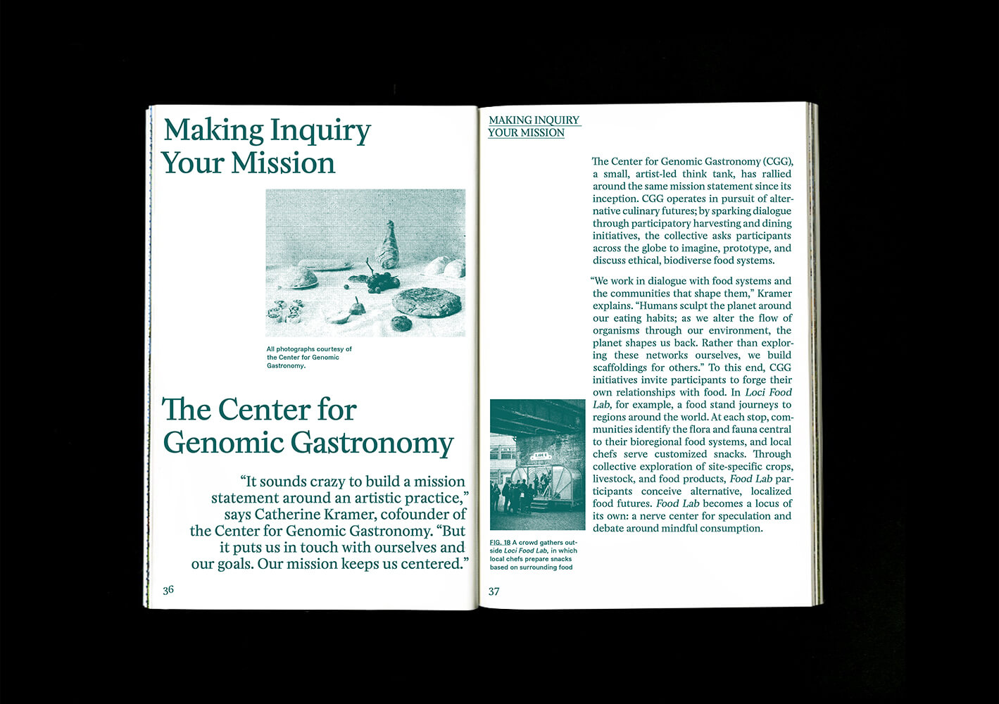
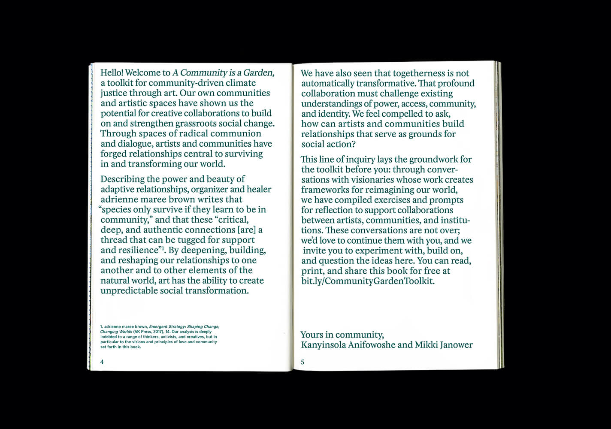
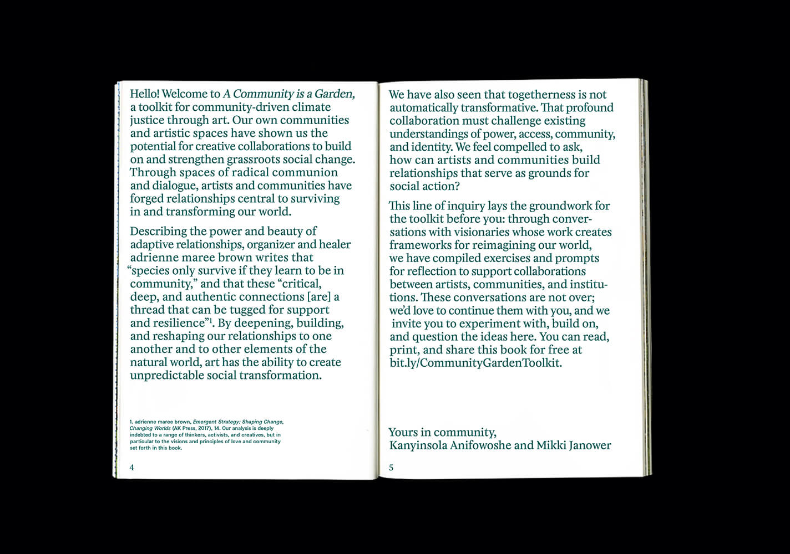
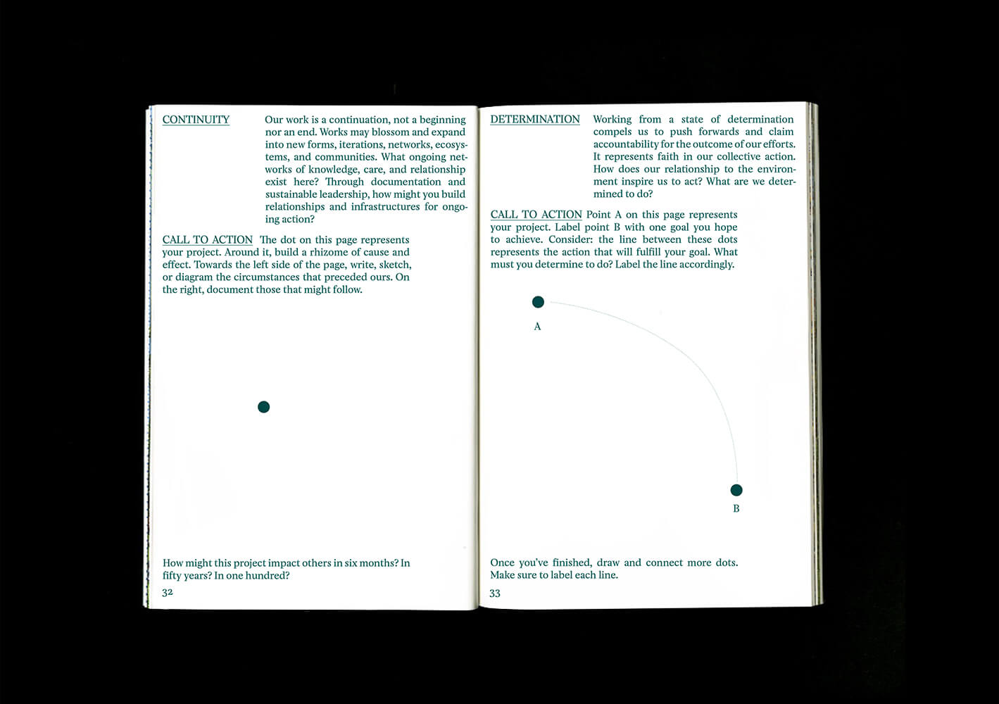
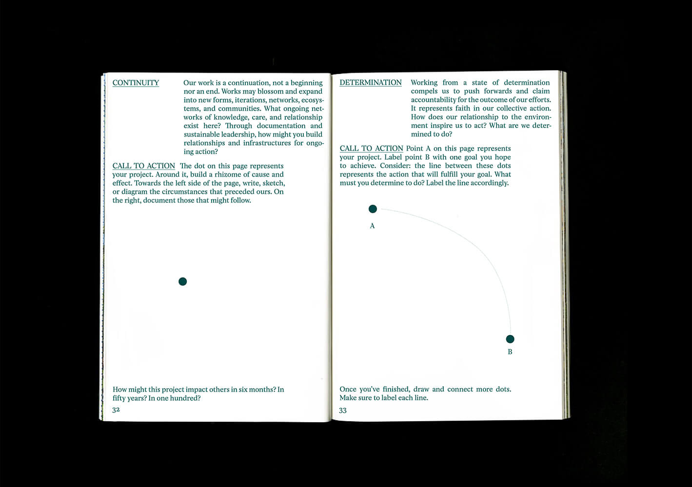

A Community is a GardenThe Guggenheim, 2020
A Community is a Garden is a toolkit for artistic practice towards grassroots change.
Describing the power of adaptive relationships, adrienne maree brown writes that “species only survive if they learn to be in community,” and that these “critical, deep, and authentic connections [are] a thread that can be tugged for support and resilience”. Only by radical communion can we survive in and transform our world.
This book was developed over the course of the inaugural Summer Research Practicum at the Guggenheim Museum. You can read, print, and share it for free at bit.ly/CommunityGardenToolkit.
1 color, 72 pages





 
